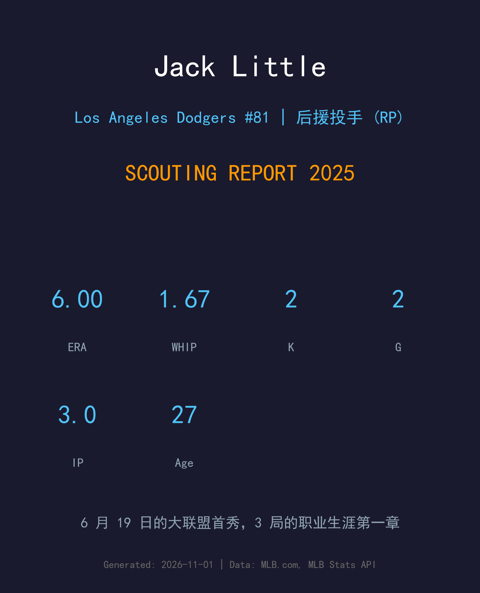
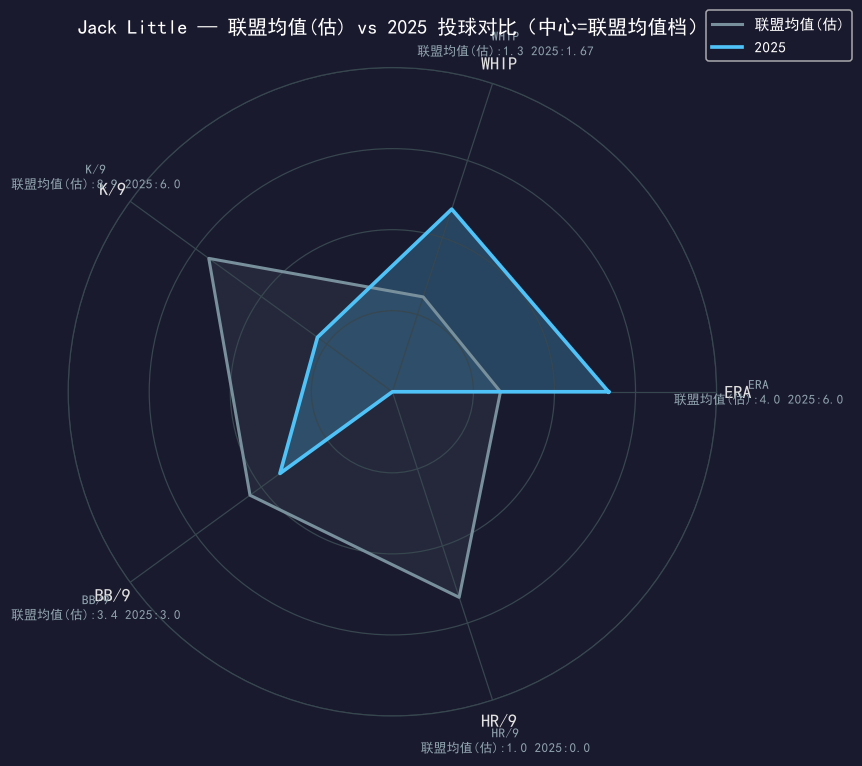
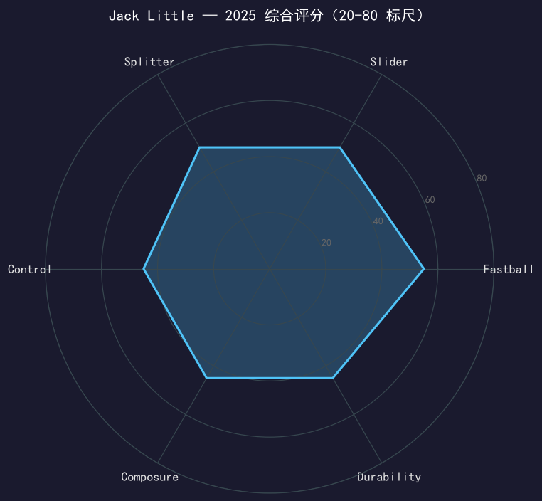

Los Angeles Dodgers #81 | 后援投手 | 右投 | 6 月 19 日的大联盟首秀，3 局的职业生涯第一章

2025 年 6 月 19 日，27 岁的 Jack Little 从俄克拉荷马城被拉上洛杉矶——这是他职业生涯第一次穿上 MLB 球衣。首秀日之后他只在 7 月 5 日再被召回一次，8 月 4 日被指定让渡，8 月 6 日被匹兹堡海盗认领。两段大联盟经历合计：2 场、3 局、自责分率 6.00。
样本小到几乎不能说明任何问题，但两个细节值得记录：其一，三球种结构（速球 56.8%、滑球 27.3%、指叉/分离球 15.9%）干净利落，是现代后援投手的教科书模板；其二，均速 94.0 mph 的速球配 6'4" 的出手角度，身体硬件完全达标。6.00 的 ERA 由 4 支安打和 1 次保送构成——没有全垒打，没有崩溃局。
从 2025 年 11 月的视角看，Little 的职业生涯第一章写满了「刚好够格」：够格被拉上大联盟（所以海盗愿意认领他），又不够格留在道奇（所以只有两次一天游）。在匹兹堡——一支愿意给 27 岁 righty 更多机会的球队——他真正的职业生涯将从 2026 年春训开始。
6 月 19 日道奇从 3A 召回，27 岁的他在洛杉矶完成 MLB 首秀——从选秀大会到这条广播，他走了六年。无论首秀结果如何，能被世界最强的棒球队叫上名，本身就是职业生涯的分水岭。
以下为道奇段数据（2025-06-19 契约选定完成 MLB 首秀，8/4 被 DFA、8/6 被海盗认领）：

作为无 MLB 前史的新秀，对比基准采用 MLB 后援投手均值（估）：ERA 4.00 / WHIP 1.30 / K/9 8.9。Little 的 3 局里 K/9 6.0 略低于均值、BB/9 3.0 优于均值、HR/9 0.00 显著优于均值——一个「不惊艳但可消化」的新秀开头。对 27 岁才登大联盟的投手来说，首秀年最重要的从来不是数据，而是证明自己的身体和球种结构属于这个层级——这两件事他都做到了。
2025 赛季真实配球数据（MLB Stats API pitchArsenal）：
超过半数使用率的地基球种，6'4" 高出手角度带来不错的进垒平面——这是他被道奇选中的核心理由。
两好球后的主要三振选项，与速球 7.2 mph 速差形成追杀组合。
对付左打的变速系武器，下坠 late，是三球种结构里对付左右开弓平衡的关键一环。
Little 的两次大联盟经历都是标准的「一天游」：6/19 上去 → 6/20 下放，7/5 上去 → 7/6 下放。对球员来说这看似残酷，但对道奇来说这是 roster 数学的最优解——牛棚缺一个能隔天的右臂，他从 3A 顶上，用完即还。能在这种节奏下保持 3 局无全垒打、保送率达标，恰恰说明他的机制稳定性过关。27 岁新秀能做到「即插即用不添乱」，已经是稀缺品质。
8 月 6 日海盗认领他时，很多人只看到「道奇放弃了他」；懂 roster 的人会看到另一面：海盗（一支 100 败级别的球队）认领一位 27 岁新秀，意味着他们愿意给他比在洛杉矶多得多的出赛机会。对 Little 这种三球种模板清晰、缺的是大联盟 repetitions 的投手来说，匹兹堡是完美的下一站——那里的牛棚门是开着的。
从 11 月的视角看，Little 的 ceiling 取决于滑球能否从「够用」进化到「杀手」。94 mph 速球 + 分离指叉的后援模板，大联盟每队都有三个；能把滑球挥空率拉到 35%+ 的那个，才会拿到第八局的钥匙。2026 年在匹兹堡，他会得到足够多的局数去打磨这颗球——那是道奇的 3 局给不了他的礼物。

刚翻过第一章的 27 岁新秀
C+ 级 / 待验证的后援模板
道奇 2025 季后赛夺冠之路：外卡 2-0 红人 → NLDS 3-1 费城人 → NLCS 4-0 酿酒人 → 世界大赛 4-3 多伦多蓝鸟。
Little 与这条夺冠路无关——8 月 6 日他已披上匹兹堡的球衣。有趣的是：道奇在季后赛击败的正是他的新东家所在的国联中区对手们，而他只能在 3A 的秋天里从新闻推送里看旧队友们举起奖杯。对一位首秀年的球员来说，这既是失落，也是燃料。
Little 的 2026 年从匹兹堡的春训开始：一支百败球队的后仓门敞开着，他的竞争对手是和他一样急于证明自己的 waiver 臂。他需要做的只有一件事——把 3A 的稳定性带进 MLB 的 40 人名单，然后不再下来。
理想剧本：锁定海盗开季牛棚，投出 40+ 场
现实基准：3A/MLB 之间的升降机，积累 20-30 局
上行惊喜：滑球进化成杀手球，成为海盗牛棚常规轮值
Jack Little 来自肯塔基州路易斯维尔，6'4" 220 磅的体格配上左打的稀有属性（右投左打的后援在大联盟是稀缺品）。他的职业之路不算快：六年小联盟打磨，在道奇的农场体系里一年一级往上爬，2025 年终于在俄克拉荷马城把速球均速和保送率都调到了「可上大联盟」的区间。
6 月 19 日，道奇的广播里第一次念到他的名字——契约选定，即刻驰援牛棚。那天他在大联盟的投手丘上站了三局，面对的不是 3A 的打者，而是真正的 MLB 打线。3 局之后他被下放，7 月再来一次，8 月就被 DFA。但对 Little 来说，6 月 19 日永远是他的「生日」：从那天起，他的球员档案上有了 MLB 的正式编号。
2025 年 11 月的 Jack Little 在匹兹堡。道奇的三局给了他入场券，海盗的认领给了他舞台——职业生涯的第一章只有三页，但第二章的空白页正在他面前展开。